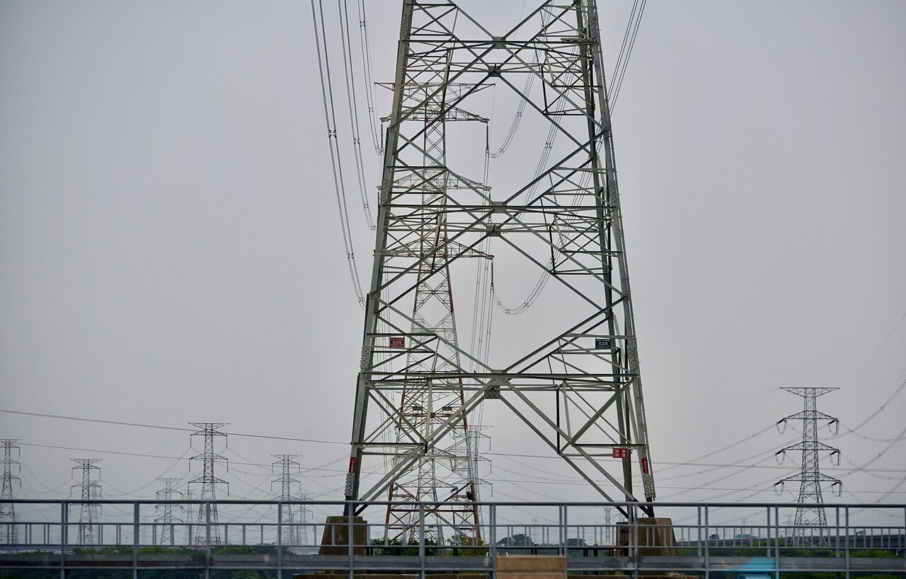

為什麼全台灣的電，每秒一起脈動 60 次？
頻率是電網的心跳，也是少數無法各退一步的標準：一個 1890 年代的工程妥協，讓日本東西分裂至今，並在 2011 年的震災裡付出代價；而台灣的 60 赫茲，現在由儲能電池在一秒之內守護。
拿起手邊的電器，標籤上多半印著 60Hz。這個數字的意思是：插座裡的交流電，每秒鐘正負來回擺動 60 次。很少人意識到，這 60 次不是台電單方面宣布的規格，而是全台灣每一部發電機此時此刻共同維持的節拍：只要有一台機組跟不上，整座電網都會感覺到。更奇特的是，這個節拍在世界各地並不一致，而日本這樣一個國土狹長的國家，東西兩半的電網竟然跳著不同的拍子，一百多年都沒能統一。
一、1890 年代的妥協，變成全世界的分裂
電力商用化的初期，頻率並沒有標準。1890 年底，美國 Westinghouse 公司的工程師開始找一個比當時 133 赫茲更低的頻率，隔年初步訂出 60 赫茲（以及 30 赫茲）。據參與者 Stillwell 的回憶，委員會本來傾向 50 赫茲，但當時市售的美國弧光燈碳棒在 50 赫茲下表現不佳，因此往上取了 60；另有說法指出燈光閃爍是考量。[7]同一時期的歐洲，AEG 與瑞士 Oerlikon 合作，1891 年的勞芬至法蘭克福輸電實驗用的是 40 赫茲；1892 年 Oerlikon 的 Hochfelden 電廠改用 50 赫茲。AEG 後來也把標準定在 50 赫茲：該公司總經理 Rathenau 在 1896 年說明，這個頻率讓輸電線壓降維持在合理範圍，對變壓器、馬達與燈泡都合適。[8]高頻率有利於照明與變壓器，低頻率有利於長距離輸電與馬達，兩個決定在當時各有道理，沒有哪個是唯一正解[11]。
在標準塵埃落定之前，各地百花齊放：1914 年一份倫敦的報告發現，單是倫敦市中心就有 41 座發電站、31 個供電系統、8 種頻率。等到二十世紀中葉，世界大致收斂成兩大陣營：美洲與部分亞洲用 60 赫茲，歐洲與多數亞洲用 50 赫茲。一旦發電機、變壓器與千家萬戶的電器都按某個頻率打造，改標準的成本就高得難以想像，十九世紀末的兩個產品決策，就這樣凍結成二十一世紀的世界地圖。
二、頻率不是規格，是即時的平衡
為什麼頻率不能像時區或度量衡那樣各自為政？因為電網是一部同步運轉的機器。台電的月刊這樣描述：傳統發電機組的轉子以每分鐘 3,600 轉旋轉，讓電網維持在 60 赫茲。同一張電網上的所有發電機必須以相同頻率運轉，誰也快不得、慢不得。
頻率同時是供需的即時儀表板：用電量突然大於發電量時，頻率開始下降，發電機轉子的旋轉動能會先頂住，這就是所謂的慣量；如果頻率繼續往下掉，電網就依序啟動保護措施。台電揭露的分段管理是：頻率低於 59.98 赫茲時儲能系統開始小功率放電，低於 59.75 赫茲時全功率放電，低於 59.5 赫茲時抽蓄水力若正在抽水會立即斷開以減少負載，低於 59.2 赫茲時低頻電驛動作、切除部分負載，避免拖垮整體電網。整套反應在一秒之內完成。
這也解釋了為什麼兩張不同頻率的電網不能直接相連：頻率不同步的兩個系統接在一起，等於讓兩群節拍不同的發電機互相拉扯。要交換電力，必須先把電轉成直流再逆變成對方的頻率，而這種頻率變換設備又大、又貴、又有損耗。
三、日本：一個國家，兩種心跳
日本是世界主要國家中唯一同時使用兩種頻率的國家。根據姬路科學館的考證，1895 年東京電燈的淺草藏前火力發電所裝上德國 AEG 製的 50 赫茲交流發電機，此後關東、東北、北海道的電燈公司紛紛跟進；而大阪電燈更早採用美製 60 赫茲發電機（該館記為 1889 年，日本最早的交流配電），向中部、近畿、四國、九州擴散。[1]兩套設備生態各自繁殖，等到電網長大，已經誰也改不動誰。
戰後日本不是沒有努力過。關西電力回顧，大約從一百年前開始，業界多次討論把全國頻率統一成一種，始終談不成；姬路科學館也記載戰後復興時曾有統一構想，最後不了了之。結果就是今天這條奇特的邊界：以靜岡縣富士川與新潟縣糸魚川的連線為界，東側 50 赫茲、西側 60 赫茲，長野、新潟、靜岡還殘留少數併用地區；九州則到 1960 年都還是兩種頻率各半。
四、分裂的帳單
分裂的日常成本藏在電器標籤裡。關西電力與中部電力的說明都列出同一份清單：標示 50/60 赫茲共用的電器全國通用，但單一頻率的洗衣機、電子微波爐、電鐘等，搬到另一種頻率的地區就得換零件或報廢。連東海道新幹線跨越頻率邊界時，都得靠四座頻率變換變電所把東京電力的 50 赫茲轉成 60 赫茲供電。
真正的重債在 2011 年到期。國際環境經濟研究所的分析指出，311 大地震後，60 赫茲的中部電力經由三座頻率變換所最多只能向東日本支援 100 萬千瓦，加上同為 50 赫茲的北海道經海底電纜支援的 60 萬千瓦，合計 160 萬千瓦，不到震災損失的發電能力的百分之五。該所直言：東西頻率不同這個結構性弱點，是計畫停電的另一個原因。[3]震災後中部電力把東清水變電所的頻率變換裝置從 20 萬千瓦擴充到 30 萬千瓦，工程費約 700 億日圓，這就是亡羊補牢的價格。
有沒有國家成功統一過？有，但過程漫長：巴西 1938 年的法令規定全國電力用 50 赫茲，1964 年的法律又改定 60 赫茲，並要求逐步統一[9]；墨西哥政府則在 1973 至 1976 年間，把中部地區從 50 赫茲改成 60 赫茲。[10]這些案例說明統一不是不可能，只是貴到多數國家寧願將就。
五、台灣的 60 赫茲
台灣沒有日本那種東西分裂。根據《電業供電電壓及頻率標準》第三條，交流電頻率定為 60 赫茲，變動率高低各不得超過標準頻率百分之四[5]；台電的電業史話也記載，從南到北所有電力設備，從發電機、電線桿到家中的電燈電扇，都以 60 赫茲運行。日治初期北、中、南各自運作的分散電網，後來逐漸互聯成單一系統，全島從此跳同一個節拍。
台灣因此與日本西部、韓國、北美同屬 60 赫茲陣營。至於台灣當年為何落在 60 這一邊，這次查閱的公開資料（台電官方史料、法規與學位論文摘要）都沒有記載最初的設備選擇，只能確定大規模電力系統是在日治時期建立的，頻率傳統沿襲至今。有一個值得對比的細節：法定容許的頻率變動是上下百分之四，但實務上電網的保護動作從 59.98 赫茲就開始，運轉人員守的其實是一條比法律嚴格得多的線。

六、誰來守護下個世紀的心跳
60 赫茲的防線正在改變守衛。傳統上，頻率的第一道防線是發電機轉子的旋轉慣量，但台電月刊指出，太陽光電等再生能源直接將光能轉為電能，沒有動能轉換、也就不提供慣量[4]；再生能源佔比越高，電網抵抗頻率變化的本錢越薄。
台電的因應是把防線搬進電池與演算法裡：儲能系統在頻率低於 59.98 赫茲時一秒內開始放電，並規劃在全台十處設立即時頻率與頻率變化率測量設備，用數據追蹤這座電網愈來愈輕的心跳。一個 1890 年代定下的節拍，如今要靠二十一世紀的電池與感測器守護。標準可以百年不變，維持標準的代價卻每個時代都要重新支付。
查證資料來源11 項
實際支持文中事實主張的來源，逐條標註支持的內容；文內如有 [數字] 標記，對應此處編號。
- 日本における交流電源の周波数（姬路科學館，2014） ↗
- なぜちがう周波数ができてしまったの？（關西電力） ↗
- 東日本大震災が浮かび上がらせた電力インフラの弱点（國際環境經濟研究所，2011） ↗
- 電力小辭典：慣量與即時頻率管理（台電月刊 2023 年 12 月號） ↗
- 電業供電電壓及頻率標準（全國法規資料庫） ↗
- 臺灣百年電業史話 19：輸電系統（台電電業文物典藏） ↗
- Edward L. Owen, “The Origins of 60-Hz as a Power Frequency”（IEEE Industry Applications Magazine, 1997） ↗
- Gerhard Neidhöfer, “50-Hz frequency: how the standard emerged from a European jumble”（IEEE Power & Energy Magazine, 2011） ↗
- 巴西 Decreto-Lei 852/1938（第 23 條）與 Lei 4.454/1964（第 1 條） ↗
- CENACE（墨西哥國家能源控制中心）：Quiénes somos ↗
- Benjamin G. Lamme, "The Technical Story of the Frequencies"（AIEE Transactions, 1918，公有領域原文） ↗
延伸探討
把故事帶回自己的思考
頻率是少數無法各退一步的標準，因為電子不會開會，整座電網只能跳同一支舞。當你在日本旅行、看著電器標籤上的 50Hz 與 60Hz，你會想到：生活裡還有哪些看不見的同步，正默默支撐著你以為理所當然的一切？